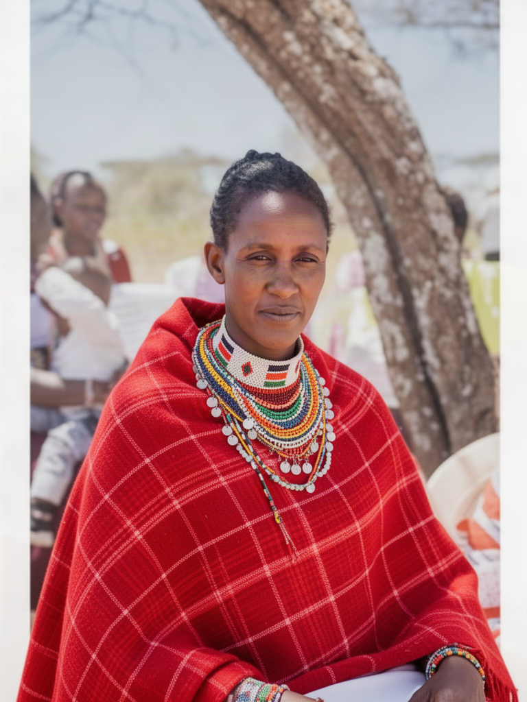

LOOK CLOSER✳LISTEN DEEPER✳SHARE THE STORY✳LOOK CLOSER✳LISTEN DEEPER✳
THE JOURNEY 01 / 05
More than adornment.
Beadwork is an art practiced by Maasai makers in Kenya. These three photographs offer glimpses of making, detail, and exchange. Tap through them to see what each image shows and where to learn more.
This is a starting point, not a claim to tell every Maasai story. Meanings and practices vary across people and communities.
The story shared with this project describes a spear at the entrance as a quiet “do not disturb” sign: respect the space, respect the people, and wait to be invited in.
Accounts of spear planting also describe it as a gesture of respect or hospitality. Its meaning depends on the household and situation, so a visitor should ask their host before entering.
Film: Asilia Africa, 2017. Embedded from YouTube; video remains on its original channel.
A LIVING CULTURE 03 / 05
INSPIRED BY MAA CULTURAL WEEK
Festival in a Box.
At Maa Cultural Week, communities share music, dance, crafts, stories, and food. Choose what to look at, taste, and listen to; learn a useful Maa word; then make a festival card. Explore Kenya’s Maa Cultural Week ↗. This is an educational experience, not an official event guide.
AN OPTIONAL AI VISUALIZATION
Try the look.
See a preview of a red checked shuka and layered beadwork with your own portrait. The result is AI-generated: it may change details and does not show the meaning or maker of any particular piece. Explore the real beadwork story ↓ and shuka colour story ↓ alongside it.

AI VISUALIZATION · SAMPLE
01 / PORTRAIT
Start with your photo
Choose a clear photo of one adult person, with the face and shoulders visible. The upload creates a public Cloudinary image and shareable URL. Only use a photo you have permission to share.
No portrait selected yet.
02 / THE LOOK
Red shuka & beadwork
Shuka referenceBeadwork reference
The result interprets these references. Cloth and bead patterns vary among makers and communities.
Beadwork is more than decoration. Its colours, patterns, and forms can carry stories about identity, relationships, life stage, and celebration. Every piece also reflects the choices of the person who made it.
01 / MATERIALS
From earth to glass
Maasai beadwork has a long history in Kenya and Tanzania. Earlier adornment used materials including seeds, shells, bone, clay, and wood. Glass beads became more widely available through trade in the nineteenth century, opening up new colours and detailed patterns.
02 / SOCIAL LIFE
What a piece can say
Beadwork may express beauty, family and age-set ties, life stage, marital status, social standing, or wealth. These signals depend on the maker, wearer, place, and occasion; a visitor cannot read someone’s personal story from a photograph alone.
Layered adornmentPattern and detailPieces made by handColour in motion
THE COLOUR STORY
Seven colours, many meanings.
These are common associations, not a fixed code. Meanings can change across communities, makers, and occasions.
Song, chant, and movement can bring people together and carry stories between generations. These eight photographs show moments of preparation, adornment, and dance. The event pictured has not been identified; the contributor has identified one person, Lemayian, and shared his story below. Explore Maa Cultural Week ↗
01 · Lemayian by the fireMeet Lemayian and read his story ↓02 · Colour and detailPaint and beadwork seen close up.03 · A moment of focusAn adorned performer with a staff.04 · A leapMovement against an open sky.05 · Details in motionBeadwork, cloth, and ornament.06 · A shared momentA jump before the gathering.07 · A face in the storyAdornment in a close portrait.08 · TogetherTwo voices in the gathering.
Photographs supplied for this project. Copyright remains with the original photographers; this site does not claim ownership.
LEMAYIAN · A STORY SHARED BY A CONTRIBUTOR
ONE PERSON, ONE PATH
Meet Lemayian.
Learning responsibility from those who came before him.
The contributor who shared this photograph identifies Lemayian as a nyangulo. In the account shared here, this period follows male initiation and comes before full moran responsibilities. Researchers also use nyangulo for a newer male age set in some Maasai communities. The term and timing are not the same across all Maasai groups.
In the account shared with us, Lemayian learns from older morans and elders about discipline, respect, traditions, ceremonies, and his role in the community. He may help care for goats and calves, join communal chores, and assist during gatherings. These are responsibilities described for his stage of life; the photograph itself shows a moment beside a fire.
The photographs are not identified as any of the ceremonies below. These short descriptions come from the Maasai Association ↗.
Enkipaata
A ceremony that brings boys into a new age-set, with dance as part of the gathering.
Eunoto
A later rite in the transition of warriors, associated with hair shaving.
Olng'esherr
A ceremony marking a move into elder status and new responsibilities.
DANCE · SKILL · COMMUNITY
Feel the movement.
Two moments to watch: the rhythm and height of a group jump dance, then a quick outdoor spear throwing challenge. These clips invite you to notice energy, timing, and practice.
01 / JUMP DANCE · 3:50
The Battle of Maasai Jump
Fernando Anuang’a describes a performance bringing together groups from Maasai Mara, Amboseli, and Magadi. The jumping, voices, and shared rhythm show a tradition kept alive across generations.
A quick outdoor challenge: watch the throw, the follow-through, and the group’s reaction. “Further than Ragnarok?” Watch and judge for yourself.
Clip supplied for this project and delivered through Cloudinary. Original creator not identified; see credits.
THE SHUKA COLOUR STORY 04 / 05
CLOTH · COLOUR · IDENTITY
Wrapped in colour.
The shuka is a cloth wrapped around the body and worn by Maasai people. This visual story was shared by a project contributor with permission to publish. Explore the five original frames and the colour associations below.
01 / 05What the colours of the Maasai shuka mean
A visual introduction to shuka cloth and its colours.
Visual story: Muse · shared by a contributor with publication permission
Every colour can carry a story.
These are associations described in Maasai cultural storytelling and beadwork. They are not a fixed rule for every shuka: meanings can differ across makers, communities, and occasions.
COLOUR ASSOCIATIONRed — courage and unity
Red is often associated with bravery, kinship, and life. It is one of the most recognisable colours in Maasai dress.